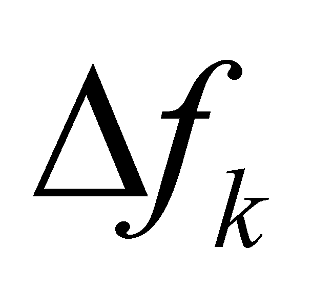
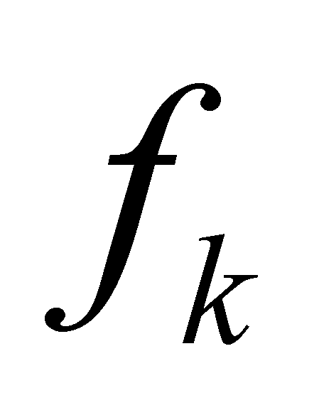

|
|
|
In chapter 3, we have seen that an object is a distribution set of the values of some attributes, on a common support with a finite domain named the object’s internal domain, distributions which do not exist or are different outside this domain. A MS able to detect an object must be also able to perform few types of fundamental processes:
Qualitative evaluation of the distributed attribute, which consists in the distinction (separation, discrimination) from the set of external influx types, of a single one, that is an influx which is received by one of the specialized input units of the perceiving IPS;
Quantitative evaluation of the attribute distributed on each element of the primary distributions belonging to the object’s set;
The evaluation of the difference between the values distributed on two adjacent elements of primary distribution, otherwise speaking, on each element of the derived distribution coming from the primary one;
Overall quantitative evaluation of the distribution’s support domain (the object’s internal domain), in order to evaluate the object’s dimensions.
The process A is based on the fact that all the properties which are found into the model set of an external object must be transmissible properties, which means that these properties may be transferred (carried) by some fluxes. A certain type of flux, for instance, a photon flux is able to carry properties such as: photon frequency (which is preserved into a homogeneous medium and for non-astronomic distances), the direction of the photon flux (which is preserved into a homogeneous medium with evenly distributed parameters), flux intensity (that is the number of photons received per time unit) etc. After their conversion into IPS, these properties become associated to the agent object: colour, spatial position (against the internal spatial RS of IPS), brightness (shining) etc.
The process B is a process with point like localization (at the limit); the shortest the domain of this localization is, the better is the domain resolution (within the distribution’s support domain) of the detecting system. Because into the point domain (PD) of the process B, there is no possibility of distinguishing an internal distribution, the distribution on this domain shall be considered as even (even if in reality it can be however uneven).
Comment X.14.1: An example of this kind of point like process is the detection process which occurs in a cell of a human sensory organ. This kind of cell receives an external flux from the specialized qualitative cell domain (a photon flux from the visible domain for the retina cells, an acoustic flux for the cells of Corti organ, a thermal photons flux for the thermo-receiver cells etc.). As a result of receiving (transmitting) that particular flux through the cell’s RBS, the flux action occurs, that is the information exit flux, with the intensity proportional with the intensity of the agent flux. Because a cell cannot perceive the distribution of the incident flux on it, but only its global intensity through the cellular RBS across the cell domain, the distribution of the external flux is considered as even, therefore, a sensory cell perceives an elementary flux. An adjacent cell shall also receive an elementary flux from an area which is adjacent with the area of the first cell, and it will provide an information output flux which is proportional with the intensity of this flux. Thus, the total amount of the sensory cells of a specific organ shall provide at the exit a spatial distribution of some information fluxes which are proportional with the spatial distribution of the external fluxes, incident on the sensory organ. Since the external fluxes are produced by some external objects (agent objects), and these fluxes carry some properties of these objects, the distribution of the information fluxes provided by a sensory organ at a specific moment is an abstract object, an internal representation of the state of the external objects whose fluxes have been received. Obviously, when we are talking about the state of the external objects as the total amount of the invariant properties of these objects, we are referring to those or that property which can be detected by the sensory organ. For a more accurate representation of the real state of an external object, a cumulation (qualitative composition) of the simultaneous representations of that object provided by all the sensory organs belonging to the organism and which receive fluxes from that particular object. This is the main reason of the objectual philosophy for upholding the synchronic perception, at the same internal tact impulse (that is the equivalent of a sampling impulse) of all the sensory organs belonging to a specific organism.
The process C is a process of comparison and qualitative evaluation of the difference between two values of the intensity deployed by the elementary information fluxes, supplied by two cells of the same sensory organ, if the cells are adjacent, the result of this operation (the contrast) is the attribute distributed on another type of support element - the domain (interval) between the internal references of the two adjacent cells. However, a finite difference between two values of an attribute, distributed on a finite difference between two values of the support attribute represents an element of derived distribution (in this case, a first rank one). Therefore, the C-type processes extended on the set of all the adjacent cell pairs of a sensory organ provides a derived distribution of the information fluxes efferent from that organ. Because the operands involved in the C-type processes must have (and so they are) a simultaneous existence (as we have mentioned in the previous comment), this means that the derived (contrast) distributions have also a simultaneous existence on the level of the entire organism.
Primarily, the process D must perform a qualitative identification of the support attribute type which is common to all the model distributions of the perceived object. Unlike the attributes from objects’ model sets, which are quite numerous, there are only three support attributes, the so-called fundamental attributes: spatial position, frequency and time. The spatial position is a support attribute for the material objects, time for the processual objects (Sx) and the frequency goes with the periodical processes. This is applicable to the external IPS objects; the internal IPS objects which we have seen that they are exclusively internal ISS, all of them have a single type of support attribute - spatial position (location into the internal memory).
Comment X.14.2: While the comment X.14.1 was focused on the visual perception organ, now it is time to shortly present the acoustic perception organ. A sensorial distribution provided by this sensory organ at a specific moment is an image (a conform representation) of the frequency distribution of the perceived agent flux. Within this sensorial distribution, each cell of the Corti organ receives an elementary sound flux, that is the intensity of the sonic flux evenly distributed on the frequency domain which is assigned to the cell (, where k is the cell index within the ordered set of cells which makes-up the Corti organ). The internal reference frequency  of this elementary domain is given by the spatial position of the sensory cell in the cochlea. Since the relative spatial position both of the cells from the Corti organ and of their related axons into the acoustic nerve is preserved up to the auditory cortex, a spatial representation (a primary spatial distribution) of the frequency of the received sound, more precisely of its spectrum, will be developed into the neurons placed in this cortex area. The derived distributions coming from this primary distribution shall be generated into the neurons from the auditory area as well, by means of an evaluation on the contrast between the sensorial signals of two neurons which are related to two adjacent Corti cells. As for the temporal evolution of the auditory sensations, their analysis and evaluation is made similarly with all the other fluxes, the information perceived at contiguous moments being stored in adjacent spatial locations of STM, consequently, for each perceived frequency we shall finally have a distribution with spatial support, which corresponds with a temporal support distribution (the perceived and stored process). The fact that the biosystems (which for the time being, may be considered as natural MS) use a single type of support attribute – the spatial one - is a major argument used by the objectual philosophy for upholding the assertion that the space is the single fundamental material realizable support attribute (see the annex X.13).
Copyright © 2006-2011 Aurel Rusu. All rights reserved.